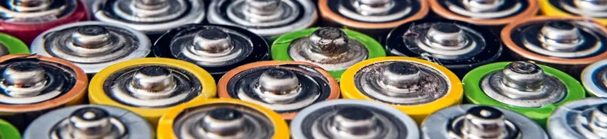

Tips Aman Menyimpan Baterai Lithium: Mencegah Korsleting untuk Proyek DIY Anda
Dipublikasikan pada 12 Agustus 2025

Siapa di sini yang suka berkreasi dengan baterai lithium? Baterai jenis ini sangat menarik karena bisa diisi ulang dan memiliki beragam jenis, seperti LiFePO4, Lithium Polymer, hingga 18650. Saking serbagunanya, para penggemar proyek do it yourself (DIY) di bidang elektronika biasanya punya banyak stok baterai ini.
Namun, menyimpan baterai lithium tidak boleh sembarangan. Apalagi jika Anda memiliki banyak stok dan berencana untuk bepergian. Penyimpanan yang salah bisa memicu terjadinya hubungan arus pendek atau korsleting yang berbahaya. Jadi, bagaimana cara menyimpan baterai lithium dengan aman?
Cara Mudah Menyimpan Baterai Lithium dengan Aman
Ada beberapa tips sederhana yang bisa kita lakukan untuk menyimpan baterai lithium dengan aman dan mengurangi risiko korsleting.
- Gunakan Wadah Isolator: Selalu gunakan wadah yang terbuat dari bahan isolator atau tidak menghantarkan listrik, seperti plastik atau kaca. Kotak plastik sangat mudah ditemukan dan efektif melindungi baterai.
- Jaga Kutub Baterai: Jika Anda menyimpan baterai dalam kondisi kutub-kutubnya terbuka, pastikan kutub-kutub tersebut tidak bersentuhan satu sama lain. Atur posisi baterai agar semua kutub menghadap ke arah yang sama (misalnya, ke atas). Bertemunya kutub positif dan negatif saat penyimpanan adalah penyebab utama korsleting.
- Jangan sekali-kali meletakkan benda logam di dekat atau di atas kutub baterai. Logam adalah penghantar listrik yang sangat baik dan bisa memicu korsleting jika menyentuh kedua kutub baterai.
Bagaimana, mudah kan? Dengan menerapkan tips sederhana ini—menggunakan wadah dari bahan isolator, menjaga kutub baterai agar tidak bersentuhan, dan menjauhkan benda logam—Anda sudah sangat mengurangi risiko terjadinya korsleting baterai saat ditinggal bepergian.
Video singkat tentang tips menyimpan baterai saat ditinggal bepergian dapat ditonton di bawah ini. Semoga bermanfaat!